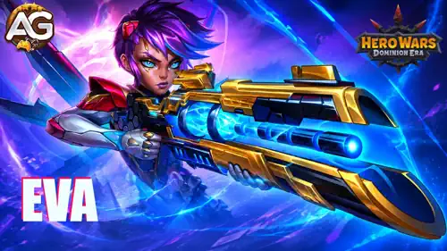
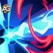
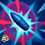
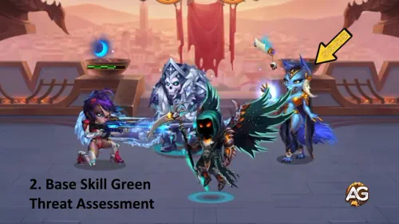
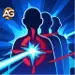
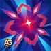
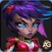
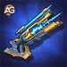

Evaガイド：Hero Wars: Dominion Eraのおすすめチーム、ペット、育成構成
- 著者：Alexandre Domingos。 。
Evaに注目したのは、彼女のスナイパーライフルが単に大きなダメージを与えるだけではないからです。「ハンターのマーク」は敵のダメージ役を味方チームが集中して圧力をかけられる標的にすると同時に、その行動を遅くし、被ダメージによって得るエネルギーを減らします。この組み合わせにより、物理ダメージと実用的な支援を両立したい場合に、彼女は興味深い選択肢となります。
Cascade、Augustus、Orionを中心としたチームとの戦闘で、私はEvaをAstridとAdamと一緒に試し、その後、それぞれと個別に組ませてみました。これらの組み合わせは厳しい戦いに勝利し、彼女を育成する自信につながりました。ここでは、彼女のスキル構成が機能する理由、私ならどのスキルからレベルを上げるか、そしてスキンストーンをどう使うかを説明します。


📋 Evaの目次
Hero Wars: Dominion EraのEvaとは？
Evaは素早さを主要ステータスとする射撃手で、追加の役割として支援、特殊属性としてハンターを持っています。彼女のスキル構成は、物理射撃、敵チーム全体の与ダメージ低下、そして「ハンターのマーク」の影響を受けた敵を弱体化するパッシブを組み合わせたものです。私は彼女を、味方が戦いを終えるまで十分に生き残れるよう支援するダメージ役だと考えています。

- 主な役割： 射撃手
- 追加の役割： 支援
- 特殊属性： ハンター
- 主要ステータス： 素早さ
- パトロン： Fenris, Biscuit, Vex
通常攻撃： 96,348の物理ダメージ（物理攻撃の100%）で、記載されているクールダウンは3.1秒です。3つのアクティブスキルも物理攻撃に応じて強化されるため、このステータスを伸ばすことはスキル構成の複数の部分に役立ちます。
Eva - Hero Wars: Dominion Eraの最大ステータス
これらの最大育成時の数値は、完全に育成されたEvaを示しています。実際のダメージと生存力は、自分の強化状況や戦闘中に有効な効果によって変わります。
| ステータス | 数値 | ステータス | 数値 |
|---|---|---|---|
| 知力 |  3,209 3,209 |
素早さ |  17,160 17,160 |
| 力 |  3,211 3,211 |
HP |  566,862 566,862 |
| 物理攻撃 |  96,348 96,348 |
魔法攻撃 |  9,627 9,627 |
| アーマー |  27,508 27,508 |
魔法防御 |  26,809 26,809 |
| 命中 |  17,160 17,160 |
クリティカル耐性 |  17,160 17,160 |
| アーマー貫通 |  28,861 28,861 |
パワー |  174,769 174,769 |
Evaの長所と短所 - Hero Wars：Web版・Facebook版
✅ 長所
- 危険な敵への圧力： 「脅威評価」は単に最も近い相手を撃つのではなく、直近の与ダメージに基づいて、マークの付いていない標的を選びます。
- チームの保護： 「制圧射撃」は、記載された最大値では、すべての敵ヒーローの与ダメージを10秒間30%低下させます。
- 妨害効果のあるマーク： 「制圧プロトコル」はマークされた敵を30%減速させ、被ダメージや回避によるエネルギー獲得量を85%減らします。
- 確実に命中する必殺技： 「弾道の裁き」は回避できず、チャージ中の最初の中断を無視します。
- 有望な物理編成： 複数の強力な魔法チームを相手にした私のテストでは、EvaはAstridやAdamと良い連携を見せました。
❌ 短所
- 時間が必要： 必殺技のチャージには2秒かかります。最初の中断を無視するのは限定的な保護であり、あらゆる妨害に対する免疫ではありません。
- マークへの依存： パッシブと必殺技の付随ダメージが機能するには、「ハンターのマーク」が有効である必要があります。
- 効果が途切れる時間帯： 「脅威評価」はマークの持続時間が10秒なのに対してクールダウンが16秒あり、「制圧射撃」は弱体効果の持続時間が10秒なのに対してクールダウンが18秒あります。
- 記載されたスキル構成に回復がない： 継続的な圧力を受けても生き残るには、味方の助けが必要です。
- エネルギー獲得抑制には限界がある： 対象となるのは、被ダメージや攻撃回避によって獲得するエネルギーであり、すべてのエネルギー源ではありません。
Evaのスキル強化優先順位 - Hero Wars: Dominion Era
Evaのスキルをゲーム内の順番で確認しながら、その仕組みを学び、ダメージ、チームの保護、「ハンターのマーク」による妨害を最も効果的に強化する方法を見ていきましょう。
私の強化順： 制圧プロトコル > 制圧射撃 > 弾道の裁き > 脅威評価。これは4つすべてを解放した後の資源の投入順です。進行中は、利用可能なスキルのレベルを上げてください。以下のカードはゲーム内の順番を維持しています。
計算式の読み方： 物理攻撃はEvaの攻撃用ステータスで、レベルはスキルの計算式に使われるレベルです。例えば204%は、物理攻撃に2.04を掛けることを意味します。物理攻撃が96,348、レベルが130の場合、「弾道の裁き」は268,049.92となり、268,050と表示されます。記載されたダメージ値は、敵による軽減が適用される前の数値です。

1. 弾道の裁き
ゲーム内の説明： Evaはスナイパーライフルを2秒間チャージし、その間、このスキルに対する最初の中断を無視します。その後、最も近い敵に発砲し、268,050のダメージを与えます。この攻撃は回避できません。戦場に「ハンターのマーク」の影響を受けたヒーローがいる場合、その全員が追加で162,800の付随ダメージを受けます。
スキルの解説： Evaは最も近い敵への射撃準備に2秒をかけ、 268,050の物理ダメージを与えます。「ハンターのマーク」の影響を受けた各ヒーローも、 162,800の付随物理ダメージを受けます。マークは、射撃の圧力を最も近い標的以外にも広げる手段だと考えてください。この攻撃は回避できませんが、最初の中断を無視することは、チャージ全体が妨害に対して無敵であることを意味しません。
計算式 - 標的への物理ダメージ： 268,050（物理攻撃の204% + 550 * レベル）
計算式 - 付随物理ダメージ： 162,800（物理攻撃の115% + 400 * レベル）
スキルアニメーション情報
- チャージ時間： 2秒
- 標的： 最も近い敵。「ハンターのマーク」が付いたヒーローには付随ダメージ
育成優先度： 高 - 3番目 – これは彼女の主な瞬間火力源で、レベルを上げると主標的へのダメージと付随ダメージの両方が増えます。私はこれを、レベルに応じて強くなる2つの支援効果より後にしています。それらの効果がチーム全体の時間を稼いでくれるからです。Evaが主なダメージ源なら、このスキルをより重視してください。

2. 脅威評価
ゲーム内の説明： 「ハンターのマーク」が付いていない標的のうち、直前の10秒間に最も多くのダメージを与えた相手を撃ち、105,969のダメージを与えます。標的には10秒間「ハンターのマーク」が付与されます。

スキルの解説： Evaは直前の10秒間の与ダメージを確認し、「ハンターのマーク」が付いていない敵の中から最も多くのダメージを与えた標的を選び、 105,969の物理ダメージを与えます。その後、10秒間マークを付けます。これが彼女のスキル同士をつなぎます。標的は必殺技の付随ダメージを受ける対象となり、4つ目のスキルの解放後は、減速とエネルギー獲得抑制も受けます。
計算式 - 物理ダメージ： 105,969（物理攻撃の83% + 200 * レベル）
スキルアニメーション情報
- 初回クールダウン： 11秒
- クールダウン： 16秒
- ハンターのマークの持続時間： 10秒
- ダメージ評価の対象期間： 直前の10秒間
育成優先度： 中 - 4番目 – 利用可能になったらすぐに解放してください。マークは不可欠です。ただし、記載されたレベルによる強化は射撃ダメージを増やすものであり、10秒間のマークを延長するものではありません。ゴールドが不足している場合、追加のレベル上げは、パッシブ、チームの保護、必殺技の強化よりも緊急性が低くなります。

3. 制圧射撃
ゲーム内の説明： すべての敵ヒーローを貫通する射撃を行い、80,153のダメージを与え、敵の与ダメージを10秒間30%低下させます。

スキルの解説： 弾丸はすべての敵ヒーローを貫通し、それぞれに 80,153の物理ダメージ を与え、与ダメージに次の低下効果を適用します： 10秒間30%低下。簡単に言えば、この低下効果だけを考慮すると、100のダメージが70になります。敵が複数の味方を同時に脅かす場面で私がこのスキルを高く評価するのは、この保護効果があるためです。
計算式 - 物理ダメージ： 80,153（物理攻撃の67% + 120 * レベル）
計算式 - ダメージ低下： 30%（0.15 * レベル + 10.5）
スキルアニメーション情報
- 初回クールダウン： 8秒
- クールダウン： 18秒
- 弱体効果の持続時間： 10秒
- 範囲： すべての敵ヒーロー
育成優先度： 非常に高い - 2番目 – このスキルのレベルを上げると、物理ダメージとダメージ低下効果の両方が強くなります。チームを守ることでEvaと味方が次の攻防を生き延びやすくなるため、私は瞬間火力の追加よりも優先しています。

4. 制圧プロトコル
ゲーム内の説明： 「ハンターのマーク」を受けた敵は、マークの持続中、30%減速し、被ダメージや攻撃回避によるエネルギー獲得量が85%減少します。

スキルの解説： このパッシブは直接ダメージを与えません。敵に「ハンターのマーク」が付くと、 30%の減速 と 被ダメージや攻撃回避によるエネルギー獲得量の85%減少 をマークの持続中に適用します。通常ならこれらのいずれかの手段で100のエネルギーを得る場合、この減少効果だけを適用すると15しか得られません。すでに蓄えられたエネルギーを取り除くものではなく、敵がエネルギーを得るあらゆる方法を防ぐものでもありません。
計算式 - 減速： 30%（0.15 * レベル + 10.5）
計算式 - エネルギー獲得量の減少： 85%（0.5 * レベル + 20）
スキルアニメーション情報
- 種類： パッシブ
- 持続時間： ハンターのマークが持続している間
育成優先度： 非常に高い - 1番目 – 減速とエネルギー獲得抑制は、どちらもレベルに応じて強くなります。解放後はこれを最優先にします。有効なマーク1つ1つの妨害能力を高め、ダメージによって敵に過剰なエネルギーを与えずに、味方チームが圧力をかけられるようになるからです。
Hero Wars: Dominion EraのEvaにおすすめのスキン
Evaのスキンをゲーム内の順番で比較し、ステータス上昇量とスキンストーンの必要数を確認して、射撃の強化と生存力の向上のどちらを選ぶか判断しましょう。
私のEvaのスキン優先順位： バランスの良いダメージ構成にはデフォルトスキンを最初に選び、その後、入手できるようになったら生存力のためにパラゴンスキンを選びます。Evaがスキルを使う前に倒れるなら、その対戦ではHPを優先してください。解放したすべてのスキンのボーナスは、選択した外見に関係なく累積します。

1. デフォルトスキン
ステータス上昇： 素早さ +1,365
- 素早さによる物理攻撃： +4,095
- 素早さによるアーマー： +1,365
素早さ1ポイントにつき物理攻撃が2、アーマーが1増加し、さらに素早さがEvaの主要ステータスであるため、物理攻撃が追加で1増加します。つまり1ポイントあたり物理攻撃が3増加し、通常攻撃とダメージを与える3つのスキルすべてを強化します。
最大レベルまでに必要な素早さのスキンストーン合計：  30,825。
30,825。
育成優先度： 高 - 1番目 – Evaのダメージ育成では、これが私の最初の選択です。彼女のスキル構成にある物理攻撃を使うすべての計算式を強化し、アーマーを増やし、最大まで育てるためのスキンストーンもパラゴンスキンより少なく済みます。減速、ダメージ低下、エネルギー獲得抑制の割合は増えません。これらはスキルレベルに応じて強くなります。
2. パラゴンスキン
ステータス上昇： HP +106,645
HPが多いほど、Evaは次の射撃やマークを待つ間に生き残る余裕が増します。ダメージの計算式を直接強化するわけではありませんが、最初の一撃を強くするよりも、もう1サイクル生き残る方が重要な場合があります。
最大レベルまでに必要な素早さのスキンストーン合計：  55,410。
55,410。
育成優先度： 中 - 2番目 – Evaがすでに十分に生き残れるなら、デフォルトスキンの後に育ててください。弱体効果を付与する前や必殺技を完了する前に倒れるなら、優先度を上げましょう。彼女のチーム支援は、生き続けることが前提です。
Evaのグリフ育成優先順位
ステータス上昇量と実戦的な優先順位をもとにEvaのグリフ強化を計画し、物理攻撃の強化と、生き残るために必要な防御力のバランスを取りましょう。
私の通常の強化順： 物理攻撃 > 素早さ > HP > 魔法防御 > アーマー。カードはゲーム内の順番に並んでいます。特定の種類の敵ダメージによってEvaが貢献する前に戦闘が終わる場合は、防御系グリフの優先順位を上げてください。
1. 物理攻撃のグリフ
ステータス上昇： 物理攻撃 +4,340
育成優先度： 非常に高い - 1番目 – 通常攻撃と、「弾道の裁き」「脅威評価」「制圧射撃」のダメージを直接強化します。すでに生存できている場合には、最初に投資すべき最も明確な候補です。
2. アーマーのグリフ
ステータス上昇： アーマー +6,500
育成優先度： 中 - 5番目 – 物理的な圧力に対して有効ですが、スキルを強化するものではありません。このガイドで取り上げた魔法系の相手を考慮し、私は魔法防御の後にしています。物理攻撃役が問題なら、この2つの順番を逆にしてください。
3. HPのグリフ
ステータス上昇： HP +62,200
育成優先度： 高 - 3番目 – HPが多いほど、Evaはチャージを完了して次の弱体効果のサイクルに到達する時間を確保できます。早い段階で倒れるなら、特に1種類の防御ステータスだけではすべての被ダメージに対応できない場合、これを早めに強化してください。
4. 魔法防御のグリフ
ステータス上昇： 魔法防御 +6,500
育成優先度： やや高い - 4番目 – 私がテストしたCascade、Augustus、Orionとの対戦では、魔法ダメージを受けてもEvaが生き残る助けになります。価値は敵次第です。彼女の物理ダメージを強化することも、純ダメージから守ることもありません。
5. 素早さのグリフ
ステータス上昇： 素早さ +1,135
- 素早さによる物理攻撃： +3,405
- 素早さによるアーマー： +1,135
1ポイントにつきEvaの物理攻撃が2、アーマーが1増加し、素早さが主要ステータスであるため物理攻撃がさらに1増加します。
育成優先度： 高 - 2番目 – 素早さはダメージとアーマーを同時に強化します。ただし、物理攻撃グリフの直接の上昇量は、このグリフの素早さから得られる物理攻撃よりも大きいため、私はダメージ用グリフとして物理攻撃を最初に選びます。それでも、素早さは次の強化先として優秀です。
Evaのアーティファクト育成優先順位 - Hero Wars: Dominion Era
Evaの武器、本、指輪をゲーム内の順番で比較し、最大ステータス上昇量と、物理ダメージやチーム支援のための強化優先順位を確認しましょう。
私のアーティファクト優先順位： Evaを中心とした物理チームでは、武器 > 本 > 指輪です。それぞれ強化素材が異なるため、資源に余裕があれば並行して育ててください。武器はチームに一時的な強化効果を与え、本と指輪はEva自身を強化します。

1. 武器 - AMR-X0「アナイアレーター」
チーム強化効果：アーマー貫通 +50,190
「弾道の裁き」を使用すると、武器アーティファクトのアーマー貫通強化効果がチーム全体に9秒間発動する場合があります。発動の確実性はアーティファクトの進化状況によって変わります。これは戦闘中の一時的なボーナスであり、Evaの最大ステータス表に恒久的に加算される追加値ではありません。
育成優先度： 非常に高い - 1番目 – Eva、Astrid、Adamを中心とする編成では、私が最初に育てるアーティファクトです。アーマー貫通は、強化効果の持続中に彼らの物理攻撃が敵のアーマーを突破する助けになります。チームの貫通量がすでに敵のアーマーを十分に上回っているなら、追加の貫通の価値は下がり、Eva自身のダメージ強化がより魅力的になります。

2. 本 - 錬金術師の書
物理攻撃 +5,577
アーマー貫通 +16,731
本は恒久的な攻撃用ステータスを提供します。物理攻撃はEvaのスキル計算式の結果を高め、アーマー貫通は武器の一時的な強化効果がない間も物理攻撃を支えます。
育成優先度： 高 - 2番目 – 有用な攻撃用ステータスを2つ備え、Evaがチームアーティファクトの強化効果の発動に依存する度合いを下げます。敵のアーマーがまだ彼女のダメージを制限しているなら、私は指輪よりも、この安定した圧力を重視します。

3. 指輪 - 素早さの指輪
ステータス上昇： 素早さ +6,249
- 素早さによる物理攻撃： +18,747
- 素早さによるアーマー： +6,249
Evaの場合、素早さ1ポイントは物理攻撃3とアーマー1になります。これは彼女自身のダメージを大幅に強化し、物理攻撃に対するある程度の防御も与えます。
育成優先度： やや高い - 3番目 – 指輪はダメージを与えるすべてのスキルを強化しますが、アーマー貫通は提供しません。3番目という順位は、私の基本方針ではチーム強化効果と本の後に位置するという意味です。貫通がすでに十分な場合や、Eva自身のダメージをもっと伸ばす必要がある場合は、指輪の素材を優先してください。
Evaにおすすめのペットのパトロン
Vex、Fenris、BiscuitからEvaのパトロンを選び、攻撃用ステータス、追加の妨害効果、回復量低下を比較して、チームに最適な候補を見つけましょう。
私の順位： 以下の物理チームでは、Vex > Fenris > Biscuitです。パトロンのステータスは青ランクで、ボーナススキルは紫ランクで解放されます。パトロンは、チームのアクティブペットでなくても、割り当てられたヒーローを支援できます。これらの解放条件については、 公式ペットガイド を参照してください。
1位：Vex

パトロンのボーナスステータス： 物理攻撃とアーマー貫通。数値はパトロンパワーによって変わります。
深い傷： Evaの物理ダメージ攻撃は「深い傷」を最大5スタック付与し、スタックは8秒後に消えます。提示された最大値では、以後その標的が味方から受ける物理攻撃に、1スタックあたり 5,036のダメージ が加算されます。5スタックでは、関連する戦闘中の相互作用を適用する前の記載ボーナスは 25,180 となります。
Vexをこの順位にする理由： Evaが他の物理攻撃役のために標的を攻撃しやすくできるため、私の第一候補です。敵全体への射撃も、複数の標的に効果を届ける手段になります。「深い傷」は「ハンターのマーク」とは別の効果であり、マークを延長したり、エネルギー獲得抑制の割合を高めたりするものではありません。
スタックの仕組みは、次の資料でも説明されています： Vexのスキルに関する公式資料。
2位：Fenris

パトロンのボーナスステータス： 物理攻撃とアーマー貫通。数値はパトロンパワーによって変わります。
盲目の怒り： パトロンを最大まで育成すると、通常攻撃で敵を2秒間暗闇にする確率は、記載上 40% です。この確率は、提示された次の計算式に従います： パトロンパワーの0.32% + 4.905。
Fenrisをこの順位にする理由： FenrisはEvaの物理ダメージを支援しながら、通常攻撃を通して妨害効果を追加します。この暗闇が有用な場合や、Vexを別のヒーローに割り当てている場合に選びます。おすすめのチームではFenrisをAstridかSomnaに割り当てることが多く、その点でもEvaにはVexが実用的な選択となります。
3位：Biscuit

パトロンのボーナスステータス： 魔法攻撃とアーマー。数値はパトロンパワーによって変わります。
クールにいこう： 所有者の攻撃は敵の回復量を5秒間低下させます。記載された最大低下率は 30.005%で、使用する計算式は次のとおりです： パトロンパワーの0.23% + 5。
Biscuitをこの順位にする理由： Biscuitは、回復を重視するチームに対する状況別の候補です。回復量低下によって与えたダメージを回復されにくくできますが、魔法攻撃ボーナスはEvaの物理射撃を強化しません。標準的なダメージ用パトロンとしてではなく、その対戦の問題を解決するために使ってください。
Hero Wars: Dominion EraでEvaに対抗する方法
ここで紹介するのは、ヒーローのスキル同士の相互作用から推測した対策候補で、アルファベット順に並べています。先ほど説明した私のEvaのテストは、これらの対策候補に対する勝率を示すものではありません。選ぶ前に、相手チーム全体を確認してください。

Corvusの「魂の祭壇」は、敵が味方にダメージを与えると純ダメージで反撃します。Evaの「制圧射撃」はすべての敵ヒーローに命中し、必殺技は追加のマーク対象にもダメージを与えるため、祭壇が有効な間は彼女に反撃する機会が生まれます。これは彼女の範囲攻撃による圧力に対してCorvusを試す理由になります。特にEvaへの回復や保護が不足している場合に有効性を検討できます。 Corvusの公式スキル説明。

Lianのパッシブは、彼女にダメージを与えたヒーローを魅了することがあります。敵全体を対象とする「制圧射撃」ではEvaはLianに当てることを避けられないため、この相互作用がEvaの後続の行動を妨げる場合があります。魅了は対象のヒーローがダメージを受けると早期に解除されることがあり、Evaの味方が解除や保護を提供する可能性もあるため、確実に封じ込める手段ではなく、試す価値のある妨害候補として考えてください。 Lianの公式スキル説明。
Evaにおすすめの戦旗 - Hero Wars: Dominion Era
Evaのチーム全体に適した戦旗を選びましょう。まず前衛を生かすことを重視し、敵の瞬間火力や、回復の補強が必要な戦闘に合わせて調整します。

先陣の戦旗
4秒ごとに、最前列のヒーローを次の量だけ回復します： 最大HPの1.6%に、挿入した赤いパターン1つにつき0.3%を加算。
Evaとチームへの利点： これは私の基本の選択であり、以下の3つの編成すべてで選んでいる戦旗です。最前列にいるヒーローを生かすことで、Evaがダメージと弱体効果のサイクルを繰り返す間、陣形を維持しやすくなります。回復対象は最前列のヒーローであり、Evaを直接回復するものではありません。

要塞の戦旗
開始時、味方は次の値に相当するアーマーを獲得します： 最前列のヒーローのアーマーの30%。この値は20秒かけて5%に向かって減少します。赤いパターン1つにつき効果が3秒延長されます。
Evaとチームへの利点： 序盤の物理ダメージによってチームが安定する前に崩れる対戦での代替候補です。共有されるアーマーは前衛だけでなくEvaも守れますが、強力な魔法ダメージや純ダメージへの対策として私が選ぶものではありません。

回復の戦旗
すべての回復量を次の割合だけ増加させます： 10%。
Evaとチームへの利点： 最前列のヒーローだけが攻撃を受けている状況ではなく、Guusの回復で複数の味方を支える必要がある場合に検討してください。既存の回復を強化するものであり、Evaに回復スキルを与えたり、シールドの数値を増やしたりするものではありません。
パターン： 私ならまず物理攻撃とアーマー貫通を比較し、その後、ここで取り上げた魔法系の相手には魔法防御、物理的な圧力にはアーマーを使います。これらはチーム構築上の選択です。リプレイを比較して、ダメージと生存力のどちらが足かせになっているかを確認してください。戦旗の仕組みは次の資料に記載されています： 戦旗の公式ガイド。
Evaにおすすめのチーム - Hero Wars: Dominion Era
役割、パトロンの選択、戦闘方針を含めて3つのEvaのチームを見ていき、その後、ダメージと妨害能力を比較して、相手に合った編成を選びましょう。
私が手応えを感じたのは、Cascade、Augustus、Orionを中心とするチームに対して、EvaをAstridやAdamと一緒に試したときでした。すでに持っているヒーローに合う中核メンバーから始め、戦闘リプレイ全体を比較してください。これらの例は、どの編成でも、それらの相手のあらゆる構成に勝てると主張するものではありません。
表の読み方： 左の列にはチームのアクティブペットと戦旗を示しています。残りの各列では、ヒーローの真上にそのパトロンを配置しています。アクティブペットの役割とパトロンは別なので、同じ編成でAxelをパトロンとして使うこともできます。
チーム1：Eva、Astrid、Adam
物理的な圧力を求めるなら、私が最初に試す中核です。Evaは付随ダメージ、ダメージ低下、マークによる抑制を提供し、AstridとAdamは継続的な攻撃力を追加します。「ハンターのマーク」との相互作用が、この3人を一緒に試す理由です。Guusが回復を担当し、Juliusがシールドでチームを守り、Axelが防御支援用のアクティブペットになります。
| チーム支援 | Eva | AstridとLucas | Adam | Guus | Julius |
|---|---|---|---|---|---|
私が確認する点： Evaがマークされた標的に射撃できるまで生き残るか、アーマー貫通アーティファクトの効果中にダメージが増えるかを確認してください。前衛が先に崩れるなら、Evaのダメージをさらに増やす前に、前衛の生存力へ投資しましょう。
チーム2：Eva、Somna、Adam
この派生編成ではAstridをSomnaに置き換えます。彼女の睡眠と攻撃力低下でEvaとAdamの時間を稼ぎ、GuusとJuliusがチームを支えます。Evaのダメージ低下とSomnaの妨害は同じ生存方針に貢献しますが、私はその効果を単純なダメージ低下率として足し合わせることはしません。
| チーム支援 | Eva | Somna | Adam | Guus | Julius |
|---|---|---|---|---|---|
私が確認する点： Somnaの睡眠は、受けたダメージが覚醒のしきい値に達すると終わる場合があります。Evaの瞬間火力によってその休止時間が短くなることがあるため、毎回睡眠が最後まで続くと期待するのではなく、その後のチームのダメージと生存状況で結果を判断してください。
チーム3：Eva、Astrid、Somna
この編成はAstridの物理的な圧力を維持し、Adamを外してSomnaの妨害を加えます。すでにAstridを育成していて、敵の圧力を生き延びるためにさらに時間が必要な場合の代替案です。GuusとJuliusは支援役を維持し、先陣の戦旗が前衛を助けます。
パトロンの調整： 私はAstridにFenrisを残し、SomnaにAxelを付けて、各ヒーローのパトロンが重複しないようにしています。Axelはチームのアクティブペットも兼ねます。これは同じ5人のヒーローで試すために調整したパトロン構成です。次の資料を参照してください： パトロンの公式ルール。
| チーム支援 | Eva | AstridとLucas | Somna | Guus | Julius |
|---|---|---|---|---|---|
私が確認する点： この派生編成ではSomnaにAxelを使い、Fenrisの攻撃用ステータスと暗闇を防御用パトロンに置き換えています。Somnaがより長く生き残り、十分な妨害を引き続き提供できるかを確認してください。このパトロンの組み合わせ自体を、個別に戦闘でテストする必要があります。
最後に：Evaは育成する価値があるか？
Evaに注目するようになったのは、彼女のダメージと支援がAstridやAdamと連携して機能したためです。育成する最も説得力のある理由は、その組み合わせにあります。射撃で敵に圧力をかけながら、弱体効果で残りの味方が行動する余裕を生み出します。
私ならスキルレベル、デフォルトスキン、攻撃用グリフから着手しつつ、生き残るために十分なHPと防御力を補います。物理チームのために武器アーティファクトを育て、最初のパトロンにはVexを使い、手持ちのヒーローに合う編成を試してください。リプレイでEvaが2回目の有用な行動の前に倒れているなら、より大きなダメージ値のためにすべてを使う前に、その生存上の問題を解決しましょう。
私の好みは、まずEva、Astrid、Adamを中核に構築し、妨害がより重要な場合にSomna入りの派生編成を比較することです。実際の対戦相手と戦闘リプレイをもとに、次に投資する価値のある編成を決めてください。
ご意見をお寄せください！
Hero Wars: Dominion EraのEvaガイドはいかがでしたか？分からなかった点や、変更を提案したい点はありますか？Alexandre Gamesのブログページにあるコメント欄へのご参加をお待ちしています。ご意見、疑問の確認、ご提案などをお気軽にお寄せください。
始めるには、下のボタンをクリックしてください：